WELCOME
Thanks for visiting my portfolio. Below you can find my work in code and docs. If you like what you see, feel free to connect (see above for contact info).
MY Code
GitHub
MY DOCS
| Document | Description | Image with Link |
|---|---|---|
| My resume | This is a read-only link to my primary resume. | 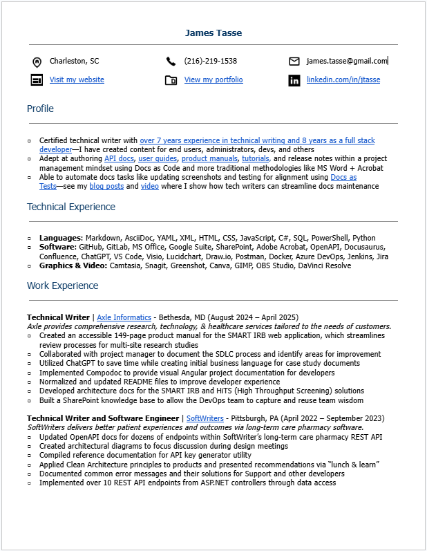 |
| My visual resume | This infographic shows my 7 years of experience in technical writing and 14 years experience in technical roles (including 8 years in software development). | 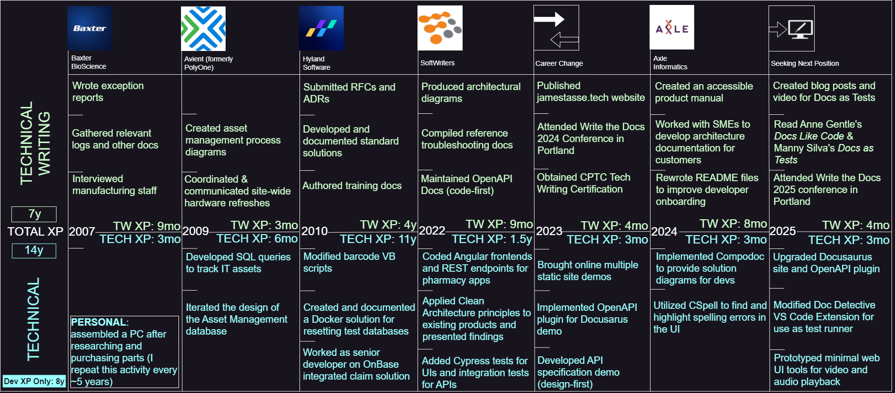 |
| Docusaurus with Open API | My Docusaurus demo based on an Open API specification that I created | 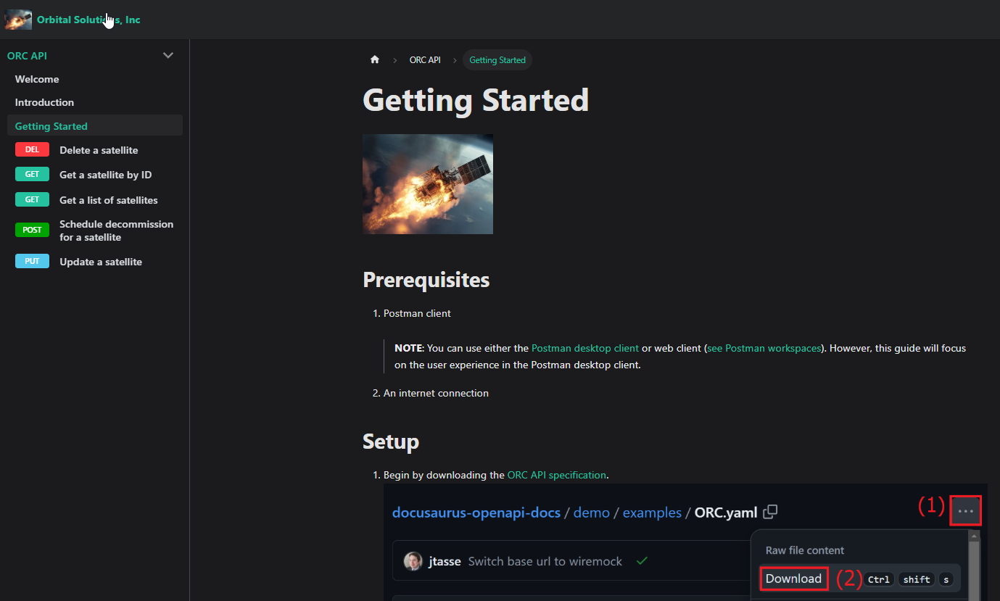 |
| SMART IRB Solution Architecture | One of two documents I created at Axle that cover solution architecture, use cases, CI/CD, and disaster recovery |

|
| Product Manual | A heavily redacted version of a [previously 149-page] product manual I created | 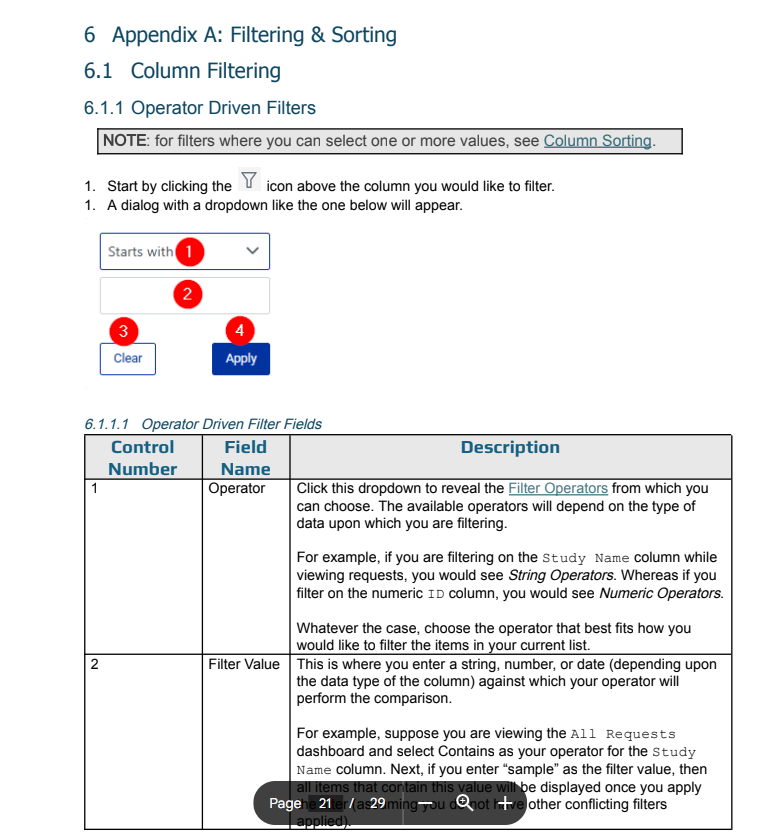 |
| Standard Operating Procedure | Fictitious SOP I created for the ORC platform’s use of digital signatures | 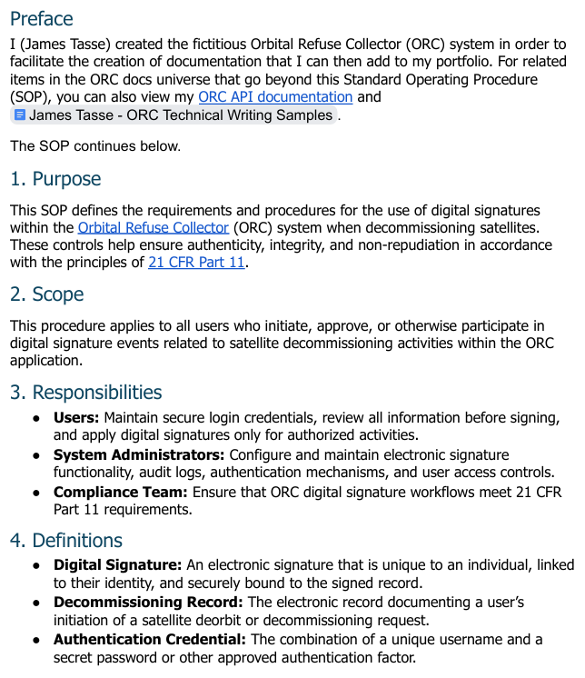 |
| Docs as Tests blog posts | Blog posts that help documentarians to understand & implement Docs as Tests for themselves |

|
| Docs as Tests video | Video that acts as a companion to my Docs as Tests blog posts, albeit in a longer (and sometimes sillier) format. To access the “meat” of the video’s technical communication, you can jump directly to the what or how sections. | 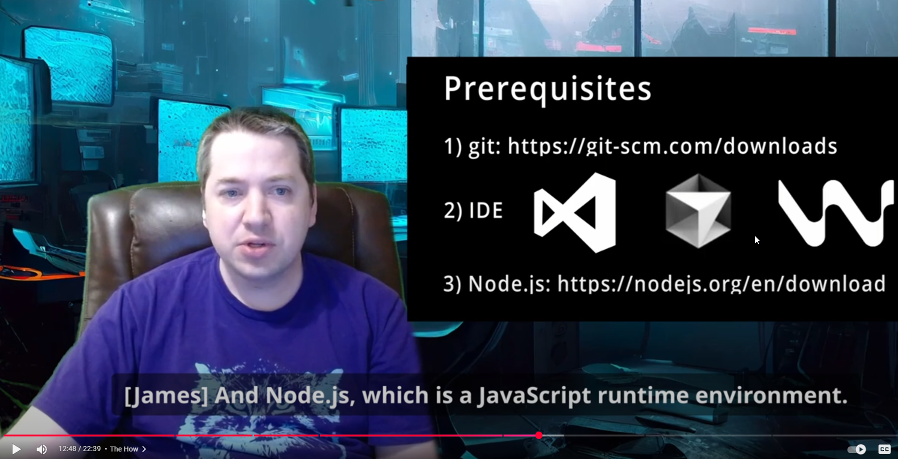 |
| User Guide | Redacted version of an actual user guide I worked on |

|
| Style Guide | Style guide I created while working on end user documentation | 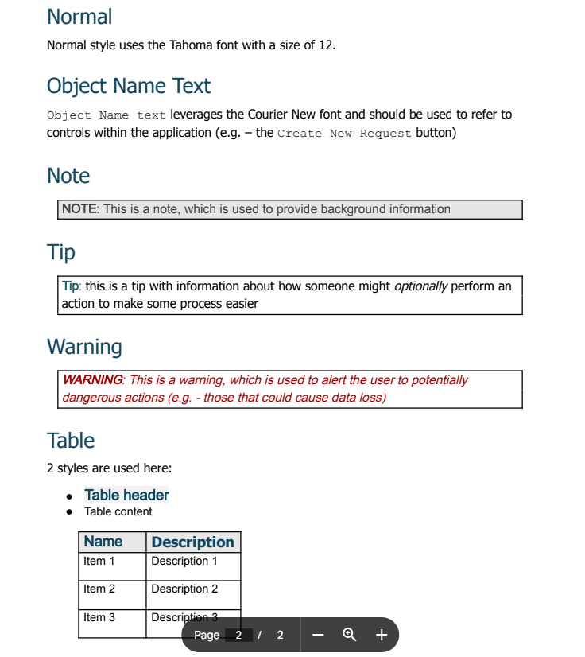 |
| Swagger Demo | Demo of my Open API spec presented via Swagger (via Swagger Hub) |

|
| Redocly Demo | Shows my Open API spec implemented in Redocly | 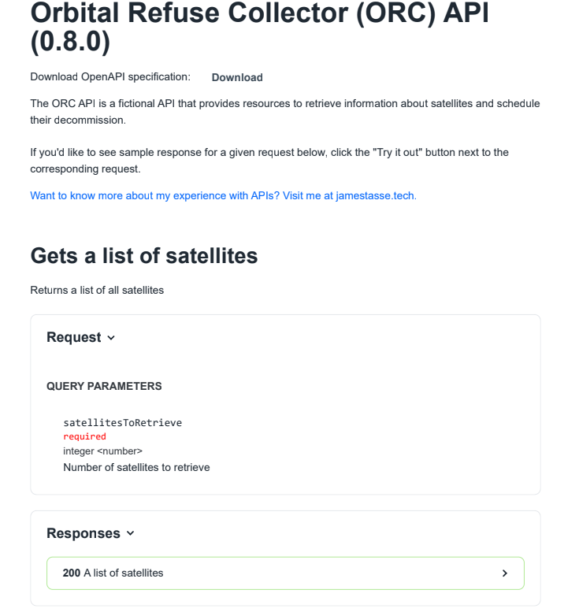 |
| ORC Technical Writing Samples | Documentation focused on my fictitious Orbital Refuse Collector (ORC) in the form of diagrams, knowledge base articles, a user guide, and other docs | 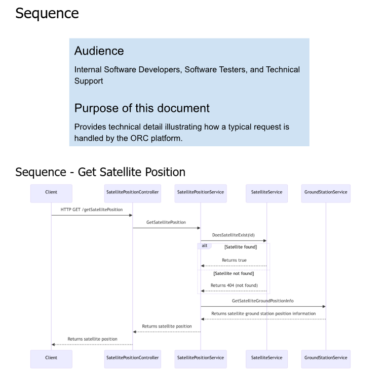 |
| CPTC (Foundation) Certificate | Proof of CPTC certification |

|
| Taking the Certified Professional Technical Communicator (CPTC) Foundation Exam |
I wrote this guide to help anyone interested in taking the
CPTC exam. NOTE: the exam is no longer available but I maintain this sample as it demonstrates my writing style. |
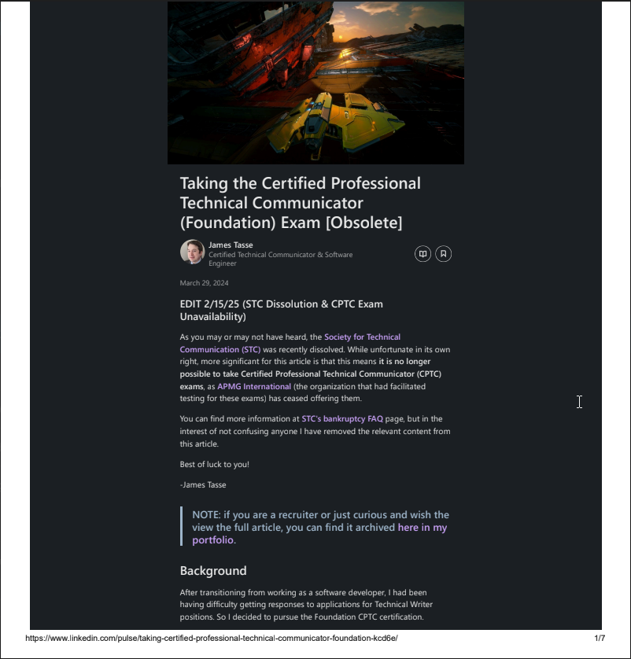 |
| Presentation (video) – Assumption | Recording of a short presentation in which I discuss the dangers of assumption | 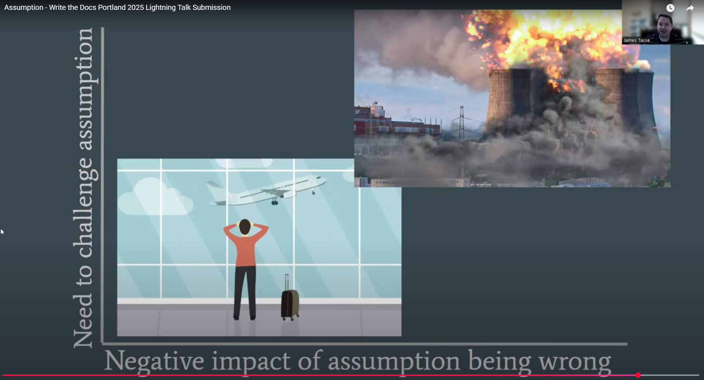 |
| “2 Dots” Music Video | This was a fun side project where I made a music video for one of my favorite songs. I showcase it here as it further demonstrates my ability to create video content using DaVinci Resolve. |

|
AVAILABILITY
I am currently seeking a permanent or contract position. (See the top of this page for my contact info).
 Back to New Site
Back to New Site